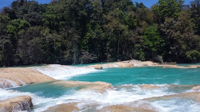
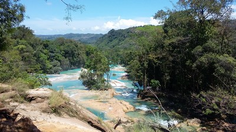
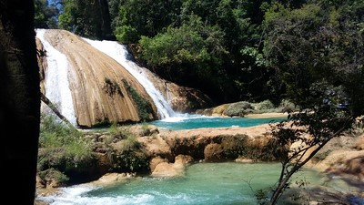
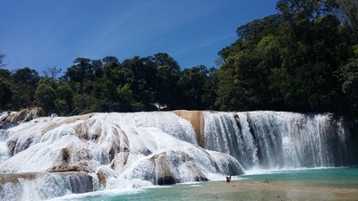
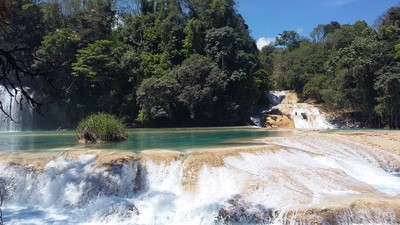

Cascadas que crean albercas naturales.
El color azul de sus aguas, la abundante vegetacion y los diferentes sonidos acuaticos,
del aire que
golpean las montañas y el constante sonido de las aves
crean un escenario enigmatico que
hacen del rio agua azul uno de los mas espectaculares escenarios en chiapas.
Se localiza en el municipio de Tumbalá, a 1 hora y 30 minutos de la ciudad de Yajalón.
Partiendo Yajalon se toma la carretera a Ocosingo, llegando a Temo se debe tomar la carretera a Palenque (federal 199).
A 90 Km aparece, a mano izquierda, el ramal de 4 km a las cascadas.
En el lugar usted puede practicar actividades de esparcimientos como:
---Nadar---
---Fotografía---
---Picnic---
---Senderismo---
---Contemplación de paisaje---
---Ecoturismo---
---Compra de artesanía---





Posicione el mouse sobre las imágenes